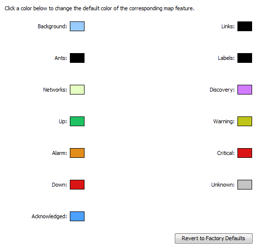

Default Map Colors
When InterMapper creates a new map, it uses a set of default colors for the
items and features on the map. Use the Map Colors preferences to set the default
colors for a map.
Use the Default Map Colors preference to view and edit the default colors for
all map items and features.

The Map Color Defaults subsection of the Server Preferences
section
of the Server Settings window. Click any of the colors
to open the Color Picker
and select a different color for that
device/link.
To view and edit the Default Map Colors preference:
- From the Server Preferences section of the Server Settings window, click Map Color Defaults. The Map Color Defaults preferences appear in the right pane.
Colors you can change
The following colors can be defined.
- Background - Set the map's background color. This is overridden by a background image.
- Ants - Set the color of the traffic flow indicators that appear on a link. These are often referred to as "marching ants." Traffic flow indicators only appear in links to SNMP devices.
- Networks - Set the default color of network ovals.
- Up - Set the color of devices that are in the "Up" state.
- Alarm - Set the color of devices that are in "Alarm" state.
- Down - Set the color of devices that are in the "Down" state.
- Acknowledged - Set the color of devices that have gone down and the outage has been acknowledged.
- Links - Set the color of links, the connections between devices, networks, or interfaces.
- Labels - Set the default color of device and network labels.
- Discovery - Set the color of a network that is the target of the discovery process.
- Warning - Set the color of devices that are in the "Warning" state.
- Critical - Set the color of devices that are in the "Critical" state.
- Unknown - Set the color of devices that are in an "Unknown" state.
To change a map color:
- Click in that feature's box. The Color Picker appears.
- Click to choose the desired color.
- Click OK.
Note: Changing the default colors does not change the colors assigned
to an existing map. Change an individual map's colors from the Map
Settings window.